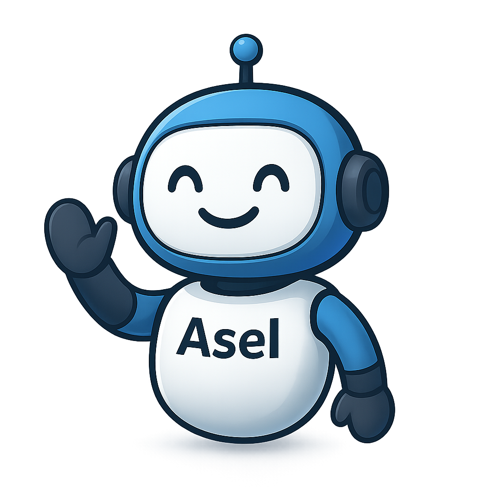

Custom Software
Built for Your Needs
I help teams and individuals turn ideas into working software— from web applications and APIs to automation and data integration— built with proven technologies and best practices.

Focused. Practical. Reliable.
AselDev represents my work as a solo software engineer, delivering enterprise-ready systems and automation solutions designed for real-world operations.
Application Development
I develop web and internal applications using C# / .NET and Blazor, focusing on clean architecture, performance, and long-term maintainability.
Automation & System Integration
I design automation solutions using the Microsoft Power Platform, along with APIs and background services to streamline workflows and connect systems.
Data, Monitoring & Insights
I build dashboards, logging, and reporting solutions using Tableau and system-level monitoring to support data-driven decision-making.
Meet the Engineer
Russel Fabroa
I am a Software Engineer currently working at TDK Philippines Corporation, with hands-on experience in building enterprise-grade applications, internal automation tools, and production data systems.
My primary expertise is in C# / .NET and Blazor, complemented by data visualization using Tableau and business process automation through the Microsoft Power Platform (Power Apps, Power Automate, SharePoint).
- C# / .NET & Blazor Development
- Enterprise & Internal Systems
- Power Platform & M365 Automation
- Tableau Dashboards & Reporting
- API & System Integration
Technical Skills
Backend & APIs
C# / .NET ASP.NET Core Blazor (Server & WASM) Entity Framework Core REST API DesignFrontend
Blazor (MudBlazor) JavaScript (ES6+) HTML / CSS Responsive UIData, Automation & Tools
Oracle MySQL SignalR (Real-time) Hangfire (Background Jobs) Serilog (Logging) Power Apps & Power Automate Tableau DashboardsProfessional Experience
Software Engineer – DX Team
TDK Philippines Corporation Digital Transformation & AutomationPart of the Digital Transformation (DX) team, focused on designing, developing, and deploying internal systems that improve operational efficiency and data visibility.
My responsibilities include building web applications using C# / .NET and Blazor, developing automation solutions with the Microsoft Power Platform, and creating dashboards and reports using Tableau.
I also work on system integration, production data monitoring, and workflow automation—supporting data-driven decision-making across manufacturing and operations teams.
Freelance Web Developer
Independent / Contract-BasedWorking as a freelance web developer, delivering custom web applications, internal tools, and automation solutions based on client requirements.
Projects include building CRUD-based systems, REST APIs, database-driven applications, and lightweight dashboards using modern development practices.
I handle the full development lifecycle—from requirement analysis and system design to deployment and maintenance.
Key Projects
Production & Attendance System
Developed an integrated system consolidating production and attendance data from Oracle and MySQL, providing real-time monitoring and automated reporting using Blazor and .NET.
Turnstile Blocking Automation
Implemented automated turnstile access control based on attendance validation, shift schedules, and business rules to improve compliance and security.
Power Platform Automation
Built Power Apps and Power Automate workflows to streamline approvals, notifications, and recurring operational processes across departments.
Internal APIs & Background Services
Designed secure REST APIs, background jobs, and real-time integrations using Hangfire and SignalR to support internal enterprise systems.
Let’s Work Together
I am open to collaboration, enterprise system development, automation initiatives, and engineering discussions.
Contact Me